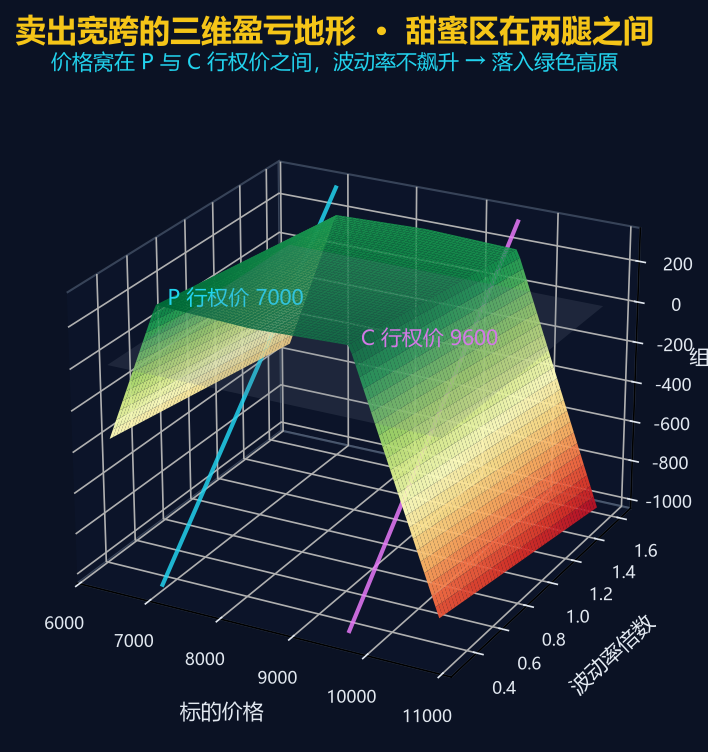
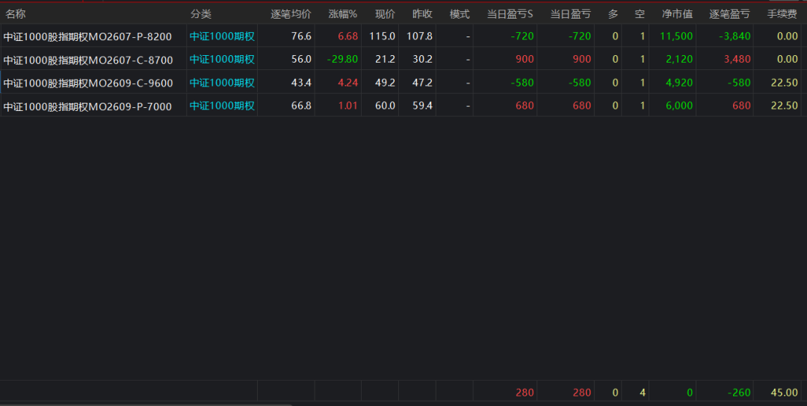
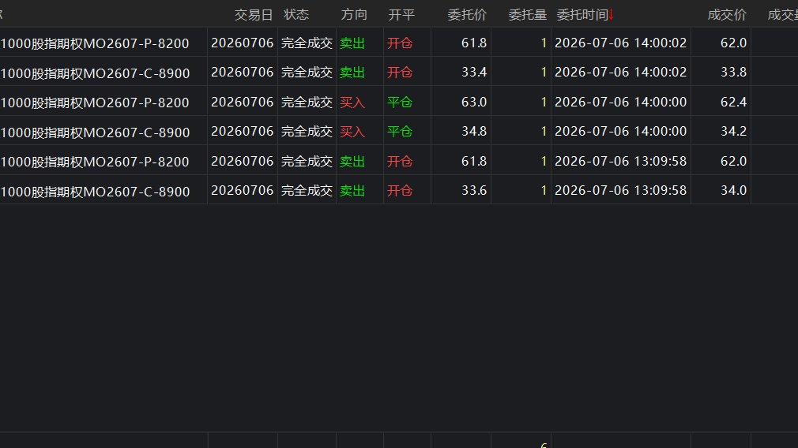
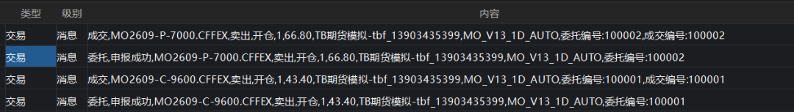

上一篇 《专享策略35 | 期权卖出宽跨式 delta 策略》 把这套策略的选腿逻辑、Delta 平衡与历史回测讲透了——为什么卖 Call+Put、为什么用 Delta 中性、净值曲线什么形状。
这一篇是落地操作手册：思路再漂亮，搬到账户里还得回答四个问题——信号怎么读、腿怎么下、单腿只成交一半怎么办、Delta 漂了怎么调。下文用一张三维盈亏地形图和三张账户界面截图，把专享策略35 从策略研究搬进 TBQuant3 交易端的每一步拆给你看。
卖出宽跨（Short Strangle）是最经典的期权“吃时间价值”策略：同时卖出一张虚值 Call、一张虚值 Put，收取权利金，赌标的价格在两腿之间来回徘徊、波动率不飙升。
专享策略35 的自动下单版是把这套逻辑做成 MO（中证 1000 指数期权）的账户下单模板，用 A_SendOrderEx 直接发送委托，自动扫期权链、按规则选腿、按阈值止盈止损。目前落到两套 tbl：
| 文件 | MOShortStrangleDeltaV13_LiveAuto | MOShortStrangleDelta15m_AutoLive |
| 周期 | ||
| 持仓周期 | ||
| 选腿方式 | ||
| 下单方式 | A_SendOrderEx，卖 Call + 卖 Put 各 1 手 | |
两套都不是普通的图表信号回测公式，成交、持仓、盈亏都要以账户 · 委托 · 消息日志为准。先用 EnableLiveOrders=False 空跑一轮，看信号正常了再切 True。
一、盈亏结构 · 甜蜜区在两腿之间

图 · 卖宽跨的三维盈亏地形，横轴价格、纵轴波动率、高度是组合盈亏
绿色高原就是甜蜜区：标的稳稳窝在 P 行权价与 C 行权价之间，同时波动率不飙升，组合每天靠 Theta 缓慢收租。两侧下坠意味着一旦价格穿破行权价或者波动率暴涨，亏损会加速放大。
策略把这个几何形状交给规则去守：专享策略35 的日线版用权利金相对均值的“偏贵度”作为开仓门槛——组合越贵，越有安全垫；同时用 MaxLegCreditShare 防止单腿裸奔，用 ExitDTE 提前离场躲开临近到期的 Gamma 风险。
二、日线版 · 入场与出场
入场：六个关卡必须同时点亮
期权池就绪： ready=1、chainSize>0账户没有本策略之外的 MO 期权空头（否则 -7保护）无 entryPending / exitPending、冷却期cooldown=0Call 在标的上方、Put 在标的下方；DTE / Delta / 虚值度合格 组合权利金满足 MinCredit与EntryPremiumRatio（够贵）单腿权利金占比 ≤ MaxLegCreditShare（不裸奔）
六灯全绿 → signalCode=10，发出卖 Call + 卖 Put 委托。
出场：六种触发原因
| 21 | |
| 22 | |
| 23 | MaxHoldBars 最长持仓天数 |
| 24 | ExitDTE（躲 Gamma） |
| 25 | ExitOnBreach=True |
| 26 |
三、15 分钟版 · 入场与出场
入场：八项守门条件
ready=1、 canTrade=1、barStatusOK=1如启用实时行情要求， quoteRealtimeOK=1当前时间在 OpenStartTime ~ OpenEndTime窗内标的价有效： spotOK=1无处理中的委托： PendingMode=0当天未停止开仓： StopForToday=0目标到期日附近的 Call / Put 都可选，Delta 与目标偏离合格 报价与流动性通过筛选（bid / ask 有效、点差可接受）
八项齐全 → signalCode=10，按目标 Delta 卖出双腿。
出场：六种触发原因
| 21 | TakeProfitRatio |
| 22 | StopLossComboRatio |
| 23 | StopLossLegRatio） |
| 24 | |
| 25 | MaxDailyLossRatio） |
| 26 | AdjustDeltaThreshold，触发调整 |
21 / 22 / 25 触发后置 StopForToday=True，当天不再开新仓；26 属于换腿。
四、signalCode 汇总 · 盘中先看这里
signalCode 是盘中最重要的仪表盘：非负数代表运行 / 平仓，负数代表阻塞 / 保护。
运行 / 平仓（signalCode ≥ 0）
| 1 | |
| 10 | |
| 21 | |
| 22 | |
| 23 | |
| 24 | |
| 25 | |
| 26 |
阻塞 / 保护（signalCode < 0）
| -7 | |
| -8 | |
| -9 | |
| -31 | |
| -32 | |
| -33 | |
| -41 | |
| -45 | |
| -51 | EnableEntries=False |
| -52 | |
| -53 | |
| -61 | |
| -62 |
三个高频排查场景：
- 10
：开仓委托已发出，立刻去委托成交页确认两条腿是否都成交。 - -33
：候选腿都在，但组合层面的权利金 / 分数 / 占比过滤没过——重点看 bestPairScore、defCredit、premCredit。 - -62
：只成交一条腿，别重复启动策略，先看 pendingMode和账户持仓。
五、成交和持仓 · 这三处才是真相
用 A 函数下单的策略，不要用策略单元里的“多仓 / 空仓”列判断账户里的实际持仓。那两列可能一直是 0，实际持仓要看下面三个地方。
5.1 账户持仓页

图 · MO2609-C-9600 与 MO2609-P-7000 均为空 1 手
卖出期权后通常表现为 空=1、多=0。逐笔盈亏、当日盈亏、手续费用于核对账户的实际结果。
5.2 委托成交页

图 · 卖出=开仓、买入=平仓
方向 / 开平的读法：卖出 · 开仓 = 卖出期权腿建立短仓；买入 · 平仓 = 回补期权腿退出短仓。如果只成交一条腿，策略会进入 pending 或重试/回滚保护，不要手动重启。
5.3 交易消息日志

图 · MO_V13_1D_AUTO 或 MO15M_AUTO 是策略来源标记
日志里的“申报成功”和“成交”分别对应委托提交和实际成交。看到这两个来源前缀，就能确认委托是本策略发出的。
六、风险控制 · 多重阈值守门
| 组合止盈 | TakeProfitRatio | |
| 组合止损 | StopLossComboRatio | |
| 单腿止损 | StopLossLegRatio | |
| 日亏封顶 | MaxDailyLossRatio | |
| Delta 调整 | AdjustDeltaThreshold | |
| 持仓时长 | MaxHoldBars / ExitDTE |
七、日常操作节奏
- 开盘前
：登录 → 检查账户里有无非策略管理的 MO 期权持仓 → 打开策略单元 → 观察 ready、chainSize、accountOK、signalCode。 - 盘中
：先看 signalCode。10 立刻确认两条腿都成交；21..26 立刻确认平仓委托成交；pendingMode ≠ 0或entryPending / exitPending，不要重复启动，先核对委托和账户。 - 收盘前
：对账户持仓 → 对委托成交 → 对消息日志。日线允许隔夜；15 分钟也不强制日内平仓，只有触发止盈 / 止损 / 当日亏损 / Delta 调整才会平仓。
八、出问题时 · 按 5 层顺序排查
- 图表顶部
： signalCode、ready、canTrade、pendingMode。 - 账户持仓
：有无未识别的 MO 期权空头。 - 委托成交
：两条腿是否都成交、是否只成交一条。 - 交易消息
： MO_V13_1D_AUTO或MO15M_AUTO来源的委托 / 成交记录。 - 参数
： EnableLiveOrders、EnableEntries、PreflightOK、时间窗口、订阅上限。
九、最后叮嘱
.tbl是按源码使用：新建公式 → 粘贴源码 → 保存 → 编译 → 加载到策略单元。不是可以直接导入的打包对象。 账户里如果已有本策略不认识的 MO 期权空头持仓，会触发保护，策略只显示信号、不再开新仓（ signalCode=-7）。持仓情况一律以账户持仓页为准；策略单元列表里“多仓 / 空仓”是 0 属于正常现象，因为 A_SendOrderEx不生成图表信号仓。先用 EnableLiveOrders=False空跑一轮，看signalCode与候选腿都正常了再切 True。
以上内容仅供 TBQuant3 MO 期权策略操作参考 · 不构成任何投资建议。期权卖方策略风险显著，请在充分理解风险后使用。